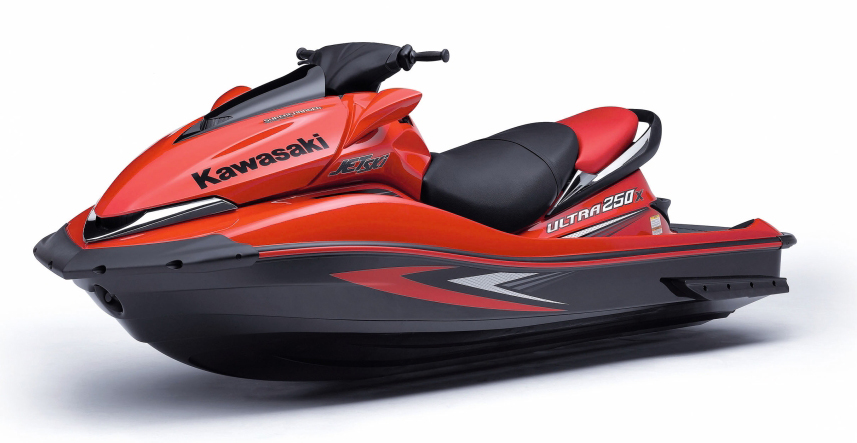
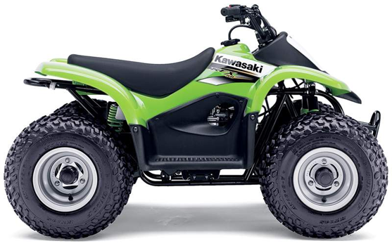

<!DOCTYPE html>
<html>
<head>
  <meta charset="utf-8">
  <meta name="viewport" content="width=device-width, initial-scale=1.0">
  <title>Jetpower Norge AS</title>

  <link href='http://fonts.googleapis.com/css?family=Permanent+Marker|Sarina|Sonsie+One|Racing+Sans+One|Bevan|Nosifer|Bangers&subset=latin' rel='stylesheet' type='text/css'>
  <link rel="stylesheet" href="css/dist/style.css">

</head>
<body>

  <script type="text/x-handlebars">

    {{#template navbar}}{{/template}}
    <div class="container">
      
      {{#template header}}{{/template}}

      {{#template nyheter}}{{/template}}


      <div class="inverse">
        {{outlet}}
        {{#template content}}{{/template}}
      </div>


      <div class="inverse" id="footer">
      {{#template footer}}{{/template}}
      </div>

    </div> <!-- /container -->
  </script>

  <script type="text/x-handlebars" id="xnavbar">
    <div class="navbar-wrapper">
        <!-- Wrap the .navbar in .container to center it within the absolutely positioned parent. -->
        <div class="container">
          <div class="navbar">
            <div class="navbar-inner">

              {{#linkTo index classNames="brand"}}Jetpower Norge AS{{/linkTo}}
              <!-- Responsive Navbar Part 2: Place all navbar contents you want collapsed withing .navbar-collapse.collapse. -->

              <ul class="nav">
                <li>{{#linkTo index}}Info{{/linkTo}}</li>
              </ul>
                  
            </div><!-- /.navbar-inner -->
          </div><!-- /.navbar -->
        </div> <!-- /.container -->
    </div>
  </script>

  <script type="text/x-handlebars" id="xheader">
    <div class="header">
    <div class="hero-unit">
      
      <h1>JETPOWER NORGE</h1>
      <p style="margin-top: 1.5em;">Jetpower Norge holder til i Eidsvoll, sentralt ved Gardermoen.<br/>
      Vi selger Kawasaki jetski, produkter innen vannsport, deler for cross (de fleste merker kan skaffes), ATV&nbsp;(4-hjuling), deler for snøscootere, kjøreutstyr for vann og på land.
      </p>
    </div>
    </div>
  </script>

  <script type="text/x-handlebars" id="xcontent">
    <div class="row-fluid">
      <div class="span6">
        <h3 class="heading">Kawasaki Ultra 250</h3>
        <blockquote>
          <p>Helt rå maskin, denne må oppleves!</p>
          <small><cite title="Source Title">Motor Magasin 2012</cite></small>
        </blockquote>

        <dl class="dl-horizontal">
          <dt>Engine</dd>
          <dd>Supercharged and intercooled, four-stroke, DOHC, four valve per cylinder, inline four-cylinder</dd>
      
          <dt>Displacement</dt>
          <dd>1,498 cc</dd>
          <dt>Bore x Stroke</dt> 
          <dd>83 x 69.2 mm</dd>
          <dt>Compression Ratio</dt>
          <dd>7.8:1</dd>
          <dt>Induction</dt>
          <dd>Roots-type supercharger with air-to-water intercooler</dd>
          <dt>Maximum boost</dt>
          <dd>11.4 psi</dd>
          <dt>Maximum horsepower</dt>  
          <dd>
            250hp @ 7,750 rpm<br/>
            <small>*HP measured in PS at the crankshaft under controlled conditions. Actual performance may vary.</small>
          </dd>
        </dl>    
      </div>

      <div class="span6">
        
        
        <span class="price">Fra kr 173 000,-</span>

      </div>
    </div>


    <div class="row-fluid head">
      <h3 class="heading">Nye filmer</h3>
        <blockquote>
          <p>Alle filmer er i DVD eller BluRay-format.</p>
        </blockquote>

      <div class="span4 movie">
        
        <h4>2002 JetX20 World Finals</h4>
          <p>Prepare yourself for serious on-the-water action with jammin footage from the Jet X20 World Finals, personal watercraft racing’s biggest annual event.</p>  
        <span class="price small">Kr 199,-</span>
      </div>
      <div class="span4 movie">
        
        <h4>World Finals 2001</h4>
          <p>Prepare yourself for serious on-the-water action with jammin footage from the Jet X20 World Finals, personal watercraft racing’s biggest annual event.</p>  
        <span class="price small">Kr 199,-</span>
      </div>
      <div class="span4 movie">
        
        <h4>Coastial Rage</h4>
          <p>Prepare yourself for serious on-the-water action with jammin footage from the Jet X20 World Finals, personal watercraft racing’s biggest annual event.</p>
          <span class="price small">Kr 199,-</span>
      </div>
    </div>

    <div class="row-fluid head">
      <div class="span12">
        <h3 class="heading">Kawasaki KFX 50</h3>
      </div>
    </div>
    <div class="row-fluid">
      <div class="span12">
        <div class="span6">
          <blockquote>
            <p>Allsidig og lettkjørt ATV, perfekt for nybegynnere.</p>
            <small><cite title="Source Title">ATV Magazine 2013</cite></small>
          </blockquote>
          <div class="row-fluid">
            <div class="span6">
              <dl>
                <dt>Motor</dt><dd>49ccm Luft avkjølt, 2-takt, en sylinder med automatic oil injection</dd>
                <dt>Bore x stroke</dt><dd>41.0 x 37.8mm</dd>
                <dt>Forgasser</dt><dd>Mikuni VM12SC x1</dd>
                <dt>Tenning</dt><dd>CDI</dd>
                <dt>Start system</dt><dd>Recoil</dd>
                <dt>Giroverføring</dt><dd>Automat</dd>
                <dt>Overføring</dt><dd>Kjede</dd>
                <dt>Fjæring framme</dt><dd>Dobbel støtdemper</dd>
                <dt>Fjæring bak</dt><dd>Enkel støtdemper</dd>
              </dl>    
            </div>
          <div class="span6">
            <dl>
              <dt>Bremser framme</dt><dd>Tromler</dd>
              <dt>Bremser bak</dt><dd>Trommel</dd>
              <dt>Dekkdimensjon foran/bak</dt><dd>AT 16 x 8-7 / AT 16 x 8-7</dd>
              <dt>Mål</dt><dd>745/760/1260 MM</dd>
              <dt>Setehøyde</dt><dd>53,5 cm.</dd>
              <dt>Bakkeklaring</dt><dd>11,9cm</dd>
              <dt>Tørrvekt</dt><dd>71 kg.</dd>
              <dt>Bensintank</dt><dd>2,6 liter</dd>
              <dt>Farge</dt><dd>Kawasaki Lime Grønn</dd>
            </dl>
          </div>
        </div>
        </div>

        <div class="span6">
          
          
          <span class="price">Fra kr 19 990,-</span>
        </div>
      </div>
    </div>

    <div class="row-fluid">
      <div class="span12">
        <small class="pull-right">Alle priser er veil inkl mva. Forbehold om endring av pris uten varsel.</small>
      </div>
    </div>
  </script>

  <script type="text/x-handlebars" id="xfooter">
    <div class="row">
      <div class="span12">
        <div style="text-align: center;">
          Jetpower Norge - Hammerstadveien 38, 2080 Eidsvoll - Tlf: +47 63960790 - Fax: +47 63965649 - Mob: +47 92453555
        </div>
      </div>
    </div>
  </script>


  <script src="js/libs/jquery-1.9.1.js"></script>
  <script src="js/libs/handlebars-1.0.0-rc.4.js"></script>
  <script src="js/libs/ember-1.0.0-rc.6.js"></script>
  <script src="js/dist/jetpower-emberapp.core.js"></script>
  
  <script type="text/javascript">
  if(document.location.hostname === 'localhost'){
    __reloadServerUrl="ws://localhost:8001";
  }
  </script>
  <script src="//localhost:8001/__reload/client.js"></script>
</body>
</html>
